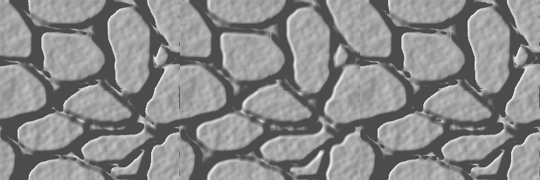
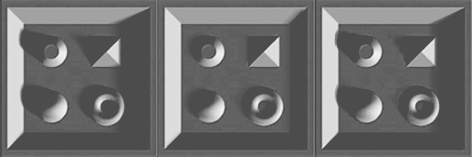

Working notes on a 4-sample self-shadowing term for iterative parallax mapping. Supersedes FXPS.
FXPS marches lightDir * depth_scale and uses that one vector both as a uv offset and as a
rise in normalised height. Physically the rise should be lightDir.z * t for a uv offset of
lightDir.xy * depth_scale * t, so the FXPS ray climbs depth_scale times too
slowly (12.5× at the default 0.08). Setting the rise to exactly zero barely changes its output.
With α = 1 it reduces exactly to
vis = 1 - |L.xy| * (S - depth_scale * m)
where S is the steepest horizon slope within a fixed reach of depth_scale * |L.xy|
uv and m is the light's slope. That is a single-azimuth horizon ambient occlusion term
with a virtual light roughly 0.5 rad wide, not a shadow. This explains both why it looks pleasant (short
reach and a huge ramp cannot band or pop) and where it fails: every slope facing away from the light is
darkened even with the sun at 70°, real shadows are too short at 15°, the result does not track
depth_scale, and adding samples does not help (error at N = 2, 3, 4, 6: 0.106, 0.104, 0.104, 0.107).
The pow(i/N, α) distribution and 1/i weights have no geometric meaning; the
1/i happens to imitate the 1/distance of a slope.
Keep the ray march (alternatives are listed below; none survived) but give it the right geometry.
h0 can only be occluded
until its light ray has climbed the head-room H = 1 - h0, which takes a uv distance of
depth_scale * cot(E) * H (E = light elevation). All samples go on that segment,
at the midpoints of N equal slices. This sets the shadow length correctly for every elevation and depth
scale, and spends nothing on plateaus.f of the segment the ray is at
h0 + f*H, so (h - h0) / (f*H) is tan(horizon elevation) / tan(light elevation).
The maximum over the samples is the horizon estimate; above 1 means shadow.r spans
2r / (sin E cos E) in that ratio. Visibility is the fraction of the disc above the horizon,
linearised and centred: 0.5 when the horizon cuts the light's centre.prefilter, default 0.5) of the sample spacing.float horizonShadow(vec2 uv, vec3 lightDir, vec4 center) // center = texel at uv (already fetched)
{
if (lightDir.z <= 0.0) return 0.0;
float h0 = center.a;
float headroom = 1.0 - h0;
float hl = max(length(lightDir.xy), 1e-4);
float cot_l = min(hl / lightDir.z, XHS_MAX_COT);
vec2 span = lightDir.xy * (depth_scale * cot_l * headroom / hl);
float inv_n = 1.0 / shadow_steps;
float spacing_texels = length(span) * inv_n * float(textureSize(tex_norm_mip, 0).x);
float lod = log2(max(prefilter * spacing_texels, 1.0));
float ratio = 0.0;
for (int i = 0; i < 32; i++) {
if (float(i) >= shadow_steps) break;
float f = (float(i) + 0.5) * inv_n;
float h = textureLod(tex_norm_mip, uv + span * f, lod).a;
ratio = max(ratio, (h - h0) / max(f * headroom, XHS_MIN_RISE));
}
float sin_cos = cot_l / (1.0 + cot_l * cot_l);
return clamp(0.5 - (ratio - 1.0) * sin_cos / (2.0 * light_radius), 0.0, 1.0);
}
Per sample: one fetch, one divide, a few multiply-adds. The origin height comes from the texel the shading pass reads anyway, so the cost is N fetches, not N + 1.
light_radius (0.05 rad) is a look parameter with a physical meaning.prefilter (0.5) is a trade: 0 is sharpest and most accurate on average but ghosts under
low light; 1 is gap-free but leaks light, because a mean-filtered height under-represents thin tall occluders.XHS_MIN_RISE (0.02) is a numerical guard: below about 5 LSB of 8-bit height the ratio is noise.XHS_MAX_COT (4) deliberately stops the ray getting flatter than about 14°. Below that,
shadows are shorter than they should be. That is a choice of look over correctness.CPU harness in lab/: brute-force area-light reference (radius 0.05 rad), three texture
sets, four light elevations (15–70°), three azimuths, depth scale 0.08, flat view, 1 pixel = 1 texel.
"lit" is the RMSE of N·L × visibility; flicker is how much the image changes for a 2°
light rotation relative to the reference (1 = moves like the reference).
| method | fetches | lit RMSE | bias | flicker |
|---|---|---|---|---|
| no shadow | 0 | 0.168 | +0.059 | 0.97 |
| FXPS α=0.5 | 4 | 0.104 | −0.013 | 1.11 |
| Soft POM | 4 | 0.110 | +0.032 | 0.98 |
| XHS | 2 | 0.048 | +0.006 | 1.01 |
| XHS | 3 | 0.033 | +0.004 | 1.03 |
| XHS | 4 | 0.026 | +0.002 | 1.01 |
| XHS | 6 | 0.017 | +0.001 | 1.01 |
| XHS, prefilter 0 | 4 | 0.019 | +0.002 | 1.02 |


Scripts and contact sheets for all of this are under lab/horizon, lab/gradient
and lab/wild (lab/mip is an unfinished run; its question is answered by
lab/final/xhs.py).